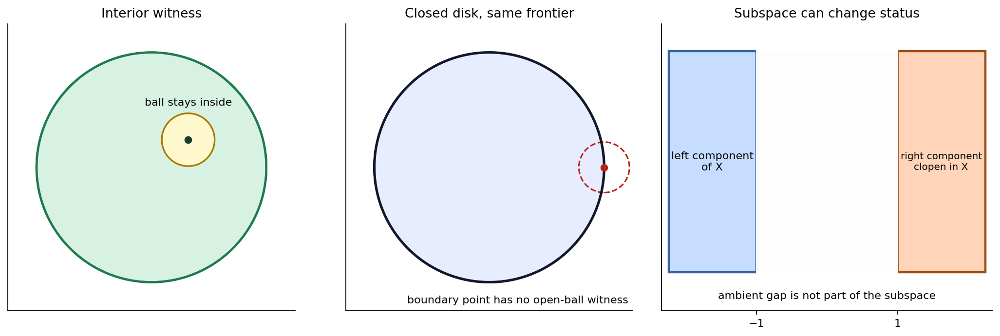
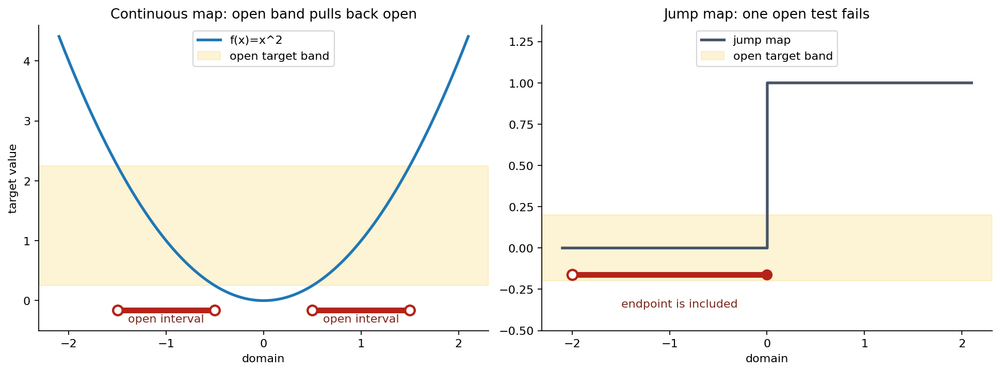
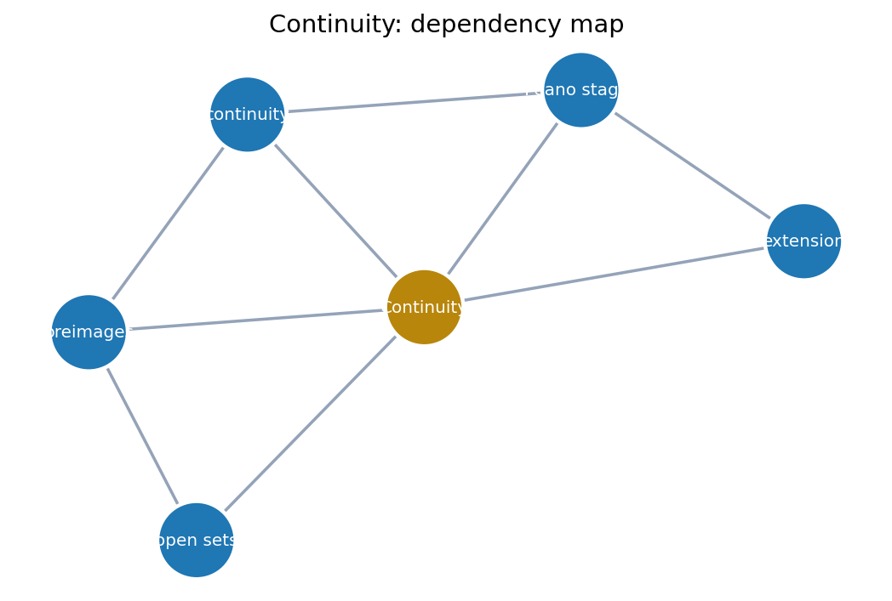
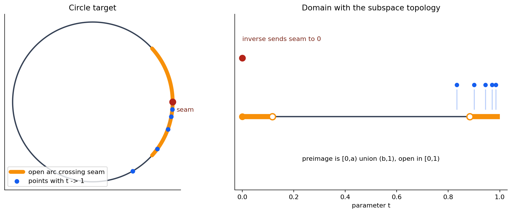
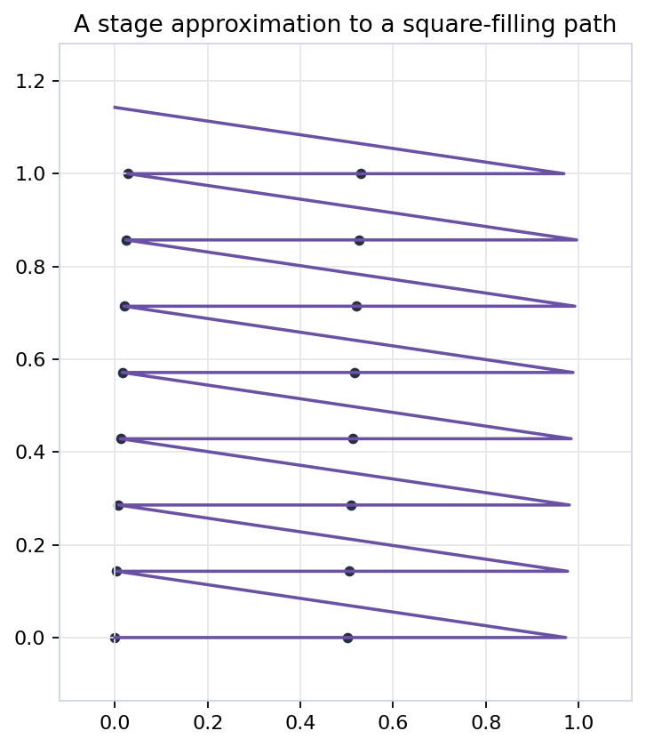
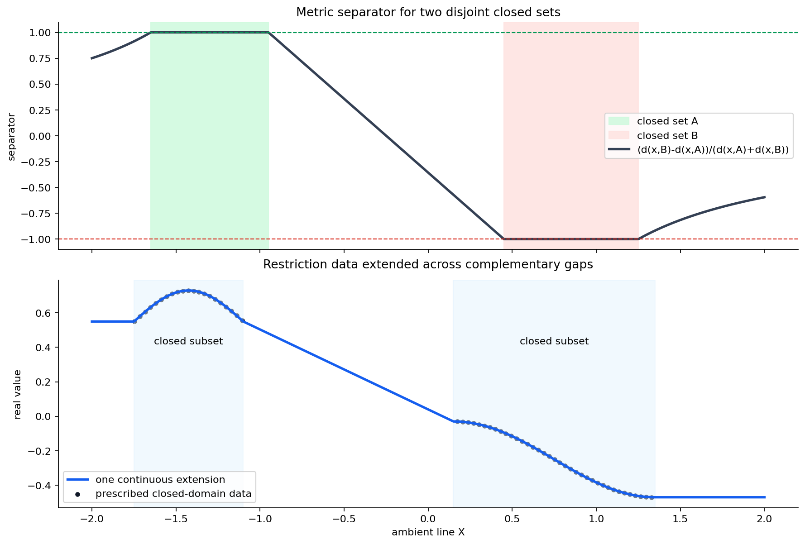

The chapter replaces graphical smoothness with a testable rule: every open target question must pull back to an open domain question.
The open set is chosen downstairs in the target; the evidence is inspected upstairs in the domain.

The ambient gap is not part of the subspace, so a whole component can be open and closed at once.
This is the first bridge from local neighborhoods to global closure operations.
| Example | Interior | Closure | Frontier | Status |
|---|---|---|---|---|
| Open unit disk in \(\mathbb{R}^2\) | itself | closed unit disk | unit circle | open, not closed |
| Closed unit disk in \(\mathbb{R}^2\) | open unit disk | itself | unit circle | closed, not open |
| Right component of \(X\) | itself in \(X\) | itself in \(X\) | empty in \(X\) | open and closed |

A single target open set with a non-open preimage disproves continuity.

Both results are structural: once preimages preserve open tests, the algebra of inverse images does the work.

The line from \(p\) through \(x\) meets the plane once; reversing the line gives the inverse.
| Stage | Visited cells | Coverage radius bound |
|---|---|---|
| 1 | 4 | 0.3535533906 |
| 2 | 16 | 0.1767766953 |
| 3 | 64 | 0.0883883476 |
| 4 | 256 | 0.0441941738 |

